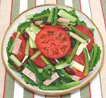

|
Salad ValentinoItaly - Insalata di Valentino | ||||
| Makes: Effort: Sched: DoAhead: |
2-3/4 # ** 1 hr Most |
A delicious salad, striking in appearance and very easy to make. For vegetarian, just skip the mortadella, it will hardly be missed. This recipe will make 6 salad size servings. | |||
|
|
------ 2 2 4 14 8 4 1/2 8 ------ 1/4 3 1/2 1/3 ------ |
--- oz oz oz oz oz oz c oz --- c T t t --- |
-- Salad Provolone Mortadella Bell Pepper, grn Tomatoes, ripe Cucumbers (1) Celery Kidney Beans (2) Lettuce, Romaine -- Dressing Olive Oil, ExtV Wine Vinegar, red Salt Pepper ----------- |
This salad can be made in advance and refrigerated, then just pour on the dressing and toss to finish. Make - (12 min work + chill time)
|